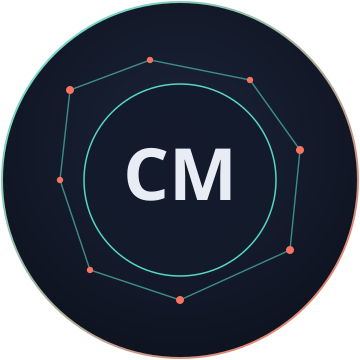

Soy estudiante de la Universidad Tecnológica ECOTEC y actualmente estudio la carrera de Sistemas Inteligentes. Me interesa aprender sobre tecnología, programación e inteligencia artificial. Me gusta poner en práctica lo que aprendo en la universidad y seguir adquiriendo nuevos conocimientos. Mi objetivo es crecer profesionalmente y desarrollar soluciones que puedan ser útiles en diferentes áreas.
Hola, soy
Cinthia Marisol Guamán Montaño
Soy estudiante de Sistemas Inteligentes en la Universidad Tecnológica ECOTEC. Me interesa la tecnología, la programación y el desarrollo de soluciones innovadoras. En este portafolio comparto un poco sobre mí, mis habilidades y los proyectos que he realizado durante mi formación.
Ver mis proyectos
01 Sobre mí
02 Habilidades
Programación
Desarrollo mis conocimientos para crear soluciones mediante código.
Sistemas Inteligentes
Conocimientos e interés en inteligencia artificial y sistemas inteligentes.
Resolución de problemas
Capacidad para analizar situaciones y buscar soluciones.
Trabajo en equipo
Colaboración con compañeros para desarrollar proyectos.